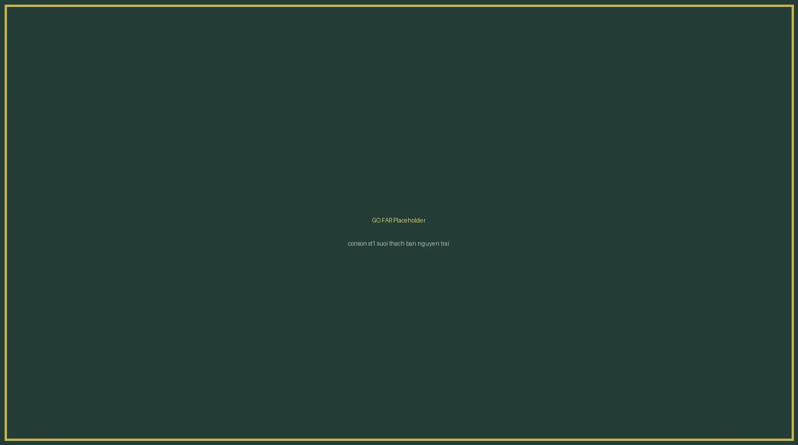

🧭 1. Tổng Quan Chùa Côn Sơn & Thiên Địa Linh Địa Thời Trần
Chùa Côn Sơn được khởi dựng từ thế kỷ XIII–XIV thời Trần. Người gắn bó mật thiết nhất với ngôi chùa là Huyền Quang tôn giả (1254–1334) — Đệ tam Tổ Thiền phái Trúc Lâm, một trong ba vị Tổ sáng lập dòng thiền Phật giáo đặc sắc nhất Việt Nam. Ngài đã về đây trụ trì, mở mang quy mô chùa, trước tác kinh sách và viên tịch tại Côn Sơn năm 1334. Tháp mộ của ngài — Tháp Đăng Quang — vẫn còn đứng trên sườn núi đến ngày nay như một chứng nhân lịch sử 690 năm.
Côn Sơn còn là chốn gắn bó sâu sắc với gia tộc và cuộc đời Nguyễn Trãi (1380–1442) — Danh nhân Văn hóa Thế giới UNESCO (1980). Thuở ấu thơ, Nguyễn Trãi sống cùng ông ngoại là Trần Nguyên Đán tại Côn Sơn; sau khi giúp Lê Lợi dựng nên Nhà Lê, bị oan ức, ông về đây ở ẩn và sáng tác tác phẩm bất hủ Côn Sơn Ca — bài thơ chữ Nôm đầu tiên của văn học Việt Nam được xem là kiệt tác văn chương bên suối rừng thông Côn Sơn.
📜 2. Nghi Thức Hành Lễ & Giữ Gìn Linh Khí Rừng Núi Côn Sơn
Côn Sơn là linh địa thiền môn và di sản UNESCO, kết hợp giữa không gian tâm linh Phật giáo và di sản thiên nhiên rừng thông cổ. Khi về chiêm bái, hành giả cần lưu ý:
🌲 3 Quy Chuẩn Văn Minh Tại Linh Địa Côn Sơn
🌳 Bảo Vệ Rừng Thông Cổ & Hệ Sinh Thái Núi Côn Sơn
Rừng thông cổ Côn Sơn với những gốc thông trăm năm là di sản thiên nhiên vô giá: không bẻ cành, không khắc tên lên vỏ cây, không đốt lửa trong rừng và mang túi rác theo về khi rời núi.
🏔️ An Toàn Leo Núi & Bảo Vệ Di Tích Đá Cổ
Đường lên Bàn Cờ Tiên và Am Bạch Vân có đoạn dốc đá trơn trượt: đi giày đế bám, không chạy nhảy trên các tảng đá cổ, không khắc chữ hay đổ màu lên Thạch Bàn và vách đá di tích.
🕯️ Hành Lễ Trang Nghiêm & Lễ Phẩm Thuần Chay
Mặc trang phục kín đáo khi vào chùa và am thờ; dâng hoa tươi và quả ngọt; không đốt vàng mã trong khuôn viên di tích và không tự ý gõ chuông trống khi không có lệnh của nhà chùa.
⛩️ 3. Lộ Trình 6 Trạm Núi Côn Sơn — Từ Suối Thạch Bàn Lên Đỉnh Bàn Cờ Tiên
Lộ trình 6 trạm đưa hành giả từ Suối Côn Sơn và Thạch Bàn Nguyễn Trãi, lên Chánh Điện Thiên Tư Phúc Tự, vào Am Bạch Vân thiền định, kính lễ Tháp Đăng Quang — lăng mộ Huyền Quang, leo lên Bàn Cờ Tiên đỉnh núi và kết hành trình tại Đền thờ Nguyễn Trãi.
Hành Trình Chiêm Bái Chùa Côn Sơn — Linh Địa Huyền Quang & Nguyễn Trãi
Theo dấu Đệ tam Tổ Huyền Quang thiền định trên núi Côn Sơn, dừng bên Thạch Bàn nơi Nguyễn Trãi viết Côn Sơn Ca và kính lễ Tháp Đăng Quang 690 năm tuổi.

Tiếng suối Côn Sơn chảy róc rách qua những tảng đá phủ rêu xanh trong rừng thông mát lành chính là âm thanh mà Danh nhân Nguyễn Trãi đã nghe và thi vị hóa thành những câu thơ bất hủ trong Côn Sơn Ca. Tảng Thạch Bàn — phiến đá lớn phẳng bên suối — là nơi ông ngồi đọc sách và sáng tác trong những tháng ngày về ở ẩn tại Côn Sơn sau khi bị oan khuất.
📜 Nguyễn Trãi & Côn Sơn Ca Bất Hủ
- Nguyễn Trãi (hiệu Ức Trai, 1380–1442) — Tiến sĩ, nhà quân sự, nhà ngoại giao và thi sĩ thiên tài thời Lê Sơ — tuổi thơ sống với ông ngoại Trần Nguyên Đán tại Côn Sơn, ấn tượng sâu sắc về rừng thông và suối đá của núi này.
- Côn Sơn Ca ra đời trong giai đoạn Nguyễn Trãi về ở ẩn tại Côn Sơn trước khi bị hàm oan vụ Lệ Chi Viên (1442): "Côn Sơn suối chảy rì rầm / Ta nghe như tiếng đàn cầm bên tai".
- UNESCO công nhận Nguyễn Trãi là Danh nhân Văn hóa Thế giới năm 1980 — một trong số ít người Việt Nam được vinh danh ở tầm thế giới.
🌊 Suối Côn Sơn — Thanh Hư Động Linh Thiêng
- Suối Côn Sơn còn được gọi là Thanh Hư Động — dòng nước trong vắt từ nguồn núi chảy xuống qua các tảng đá tạo âm thanh róc rách tự nhiên huyền ảo.
- Nước suối mát lạnh quanh năm; không được tắm, giặt hoặc xả rác xuống suối thiêng.
- Thời điểm sáng sớm (trước 09h00) là lúc suối đẹp nhất — sương sớm còn vương và tiếng nước chảy trong trẻo nhất.
CHỨNG NHẬN CHIÊM BÁI CHÙA CÔN SƠN VIÊN MÃN
Chúc mừng bạn đã hoàn thành trọn vẹn lộ trình chiêm bái 6 trạm tại Di tích Quốc gia Đặc biệt Côn Sơn — Di sản Thế giới UNESCO 2025 (Quần thể Yên Tử). Nguyện cầu ân đức Đệ tam Tổ Huyền Quang và hồn thiêng Danh nhân Nguyễn Trãi phù trì cho bạn tâm sáng trí huệ, cuộc sống bình an hạnh phúc.
🧭 4. Lịch Trình 1 Ngày Côn Sơn — Kiếp Bạc & Rừng Thông Cổ Chí Linh
Hành trình 1 ngày khám phá quần thể di tích Côn Sơn - Kiếp Bạc (cách Hà Nội ~80km, cách Hải Phòng ~90km theo đường cao tốc Hà Nội - Hải Phòng):
Buổi Sáng (07h00 – 11h00): Chiêm Bái Côn Sơn — Suối, Thạch Bàn, Chùa & Tháp Đăng Quang
- 07h00: Đón bình minh rừng thông Côn Sơn, lắng nghe suối Côn Sơn chảy róc rách qua Thạch Bàn — tảng đá lớn nơi Nguyễn Trãi đọc sách viết thơ.
- 08h30: Lễ Phật tại Chùa Côn Sơn — Thiên Tư Phúc Tự, chiêm bái điện thờ Trúc Lâm Tam Tổ.
- 09h30: Lên Am Bạch Vân và kính lễ Tháp Đăng Quang — lăng mộ Huyền Quang; leo thêm lên Bàn Cờ Tiên đỉnh núi hưởng gió trời.
Buổi Trưa (11h15 – 13h30): Cơm Chay Thanh Tịnh & Nghỉ Dưỡng Rừng Thông
Dùng bữa chay thanh đạm với canh rau đồng, đậu hũ kho và chè hạt sen tại khu dịch vụ ẩm thực chân núi Côn Sơn; nghỉ trưa dưới bóng rừng thông mát lành.
Buổi Chiều (14h00 – 17h30): Đền Kiếp Bạc — Hưng Đạo Vương & Thăm Đền Nguyễn Trãi
- 14h00: Di chuyển ~5km tới Đền Kiếp Bạc (Đền thờ Hưng Đạo Đại Vương Trần Quốc Tuấn) — một trong những đền thiêng bậc nhất miền Bắc nằm trong cùng quần thể Di tích Quốc gia Đặc biệt Côn Sơn - Kiếp Bạc.
- 15h45: Ghé thăm Đền thờ Nguyễn Trãi và Nguyễn Phi Khanh kề bên chùa Côn Sơn, tưởng niệm vị Danh nhân Văn hóa Thế giới bất khuất trước khi kết thúc hành trình.